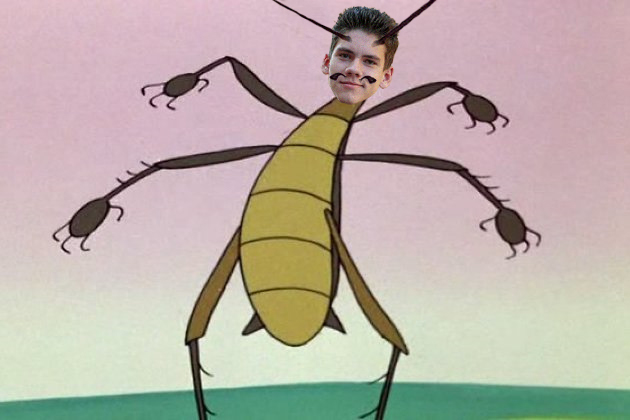
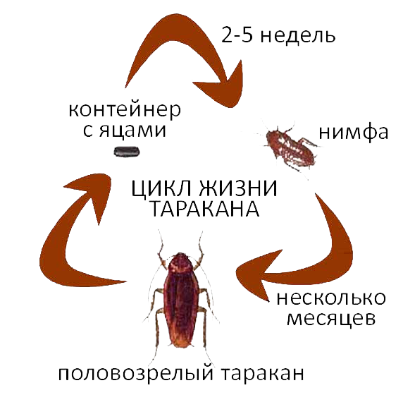
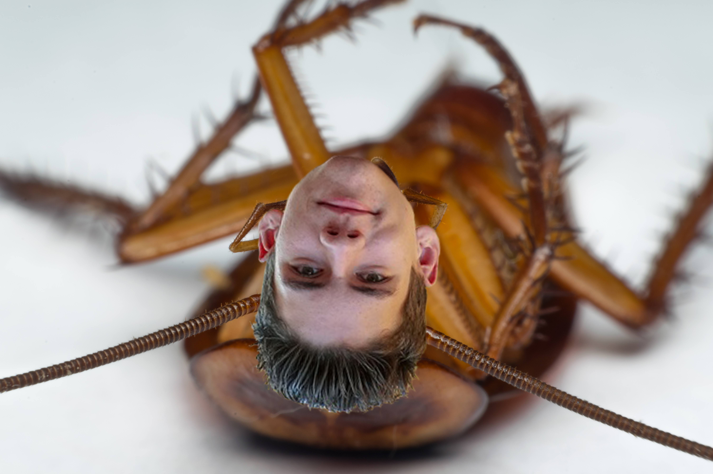

Чаще всего рядом с человеком проживают рыжие тараканы – прусаки. Их популяция в дикой среде в разы меньше чем в домашних условиях. Прусак самый маленький из всех синантропных, общая длина насекомого не больше 10-15 мм. Передвигаются очень быстро из-за этого их сложно поймать. Крылья хорошо развиты, немного длиннее тела, тем не менее, прусаки не летают. Определить их можно по характерному рыжему окрасу и темным коричневым полосам вдоль тела. Еще одна отличительная особенность – длинные усы, за счет них они ориентируются в пространстве, находят пищу и воду. Тельце покрыто хитиновой оболочкой, спасающей от легких ударов.
Скорости размножения этих существ могут позавидовать многие другие насекомые. Большое количество яиц в кладке и короткий срок достижения половой зрелости, при благоприятных условиях проживания, обеспечивают рост популяции в десятки и сотни раз в год. Размножение происходит половым путем в течение всего года. За свою жизнь тараканы проходят несколько стадий развития и неоднократно изменяют свою внешность до неузнаваемости. Особи разнополые. Самцы всегда меньше по размеру, чем самки, но крылья у них развиты лучше и дают возможность совершать перелеты. Тело женской особи более плотное. Крайний членик брюшка самца имеет генитальную пластинку.
Половая зрелость наступает сразу же, как насекомое достигает вида взрослой особи. Оплодотворению предшествуют своеобразные брачные игры. Самка вырабатывает феромоны, привлекая самцов и сообщая им о готовности к вынашиванию яиц. Мужские особи некоторых видов устраивают бои за право оплодотворения самки, расправляют крылья и демонстрируют возможности полета. Женские особи также использую маленькие крылышки для привлечения внимания, потряхивая ими.
Во время оплодотворения самец передает самке генную информацию, которая может храниться в ее теле длительное время и использоваться для последующего оплодотворения. Развитие потомства начинается в специальной капсуле, называемой оотекой. В зависимости от вида насекомых оотека может располагаться вне тела матери на ее брюшке, или находится внутри нее до формирования личинок. Перед вылуплением самка сбрасывает оотеку в защищенном месте. Капсула на протяжении развития яиц и личинок всегда должна быть влажной, высыхание ведет к гибели потомства. Некоторые представители отряда являются живородящими, яйца находятся внутри матери и на свет появляются уже полностью жизнеспособные личинки. В зависимости от вида матери могут заботиться о потомстве после вылупления или, сбрасывая отеку, навсегда разрывать с ним связь. От закладки капсулы до появления личинок проходит в среднем 3 – 4 недели.
За весь жизненный цикл самка может откладывать личинки 4 – 6 раз. Каждая оотека прусака содержит около 30 яиц, черного до 18. Одна самка способна принести от 20 до 200 личинок за всю жизнь.Общее потомство одной женской особи в течение года может достигнуть значений в несколько тысяч. Наибольшая плодовитость присуща прусаку – до 300 тысяч особей в год. Черный откладывает примерно в два раза меньше яиц. Американский размножается намного медленнее — всего 800 личинок в год.
Увы,но тараканы Владики живут максимум 2 года,после чего их спермобаки лопаются. Увы,но такая их судьба...
Врач Владик Олейников утверждает ,что размножение с тараканами это нормально,он не против того,чтобы пошалить с его усатыми друзьями.Мне трудно оспорить его слова,ведь он врач. К сожалению он погиб в баре подравшись с другом курягой усатым Виктором
